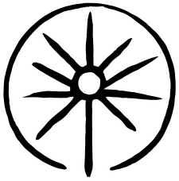
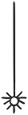

Studio
Tela de Araña is taking shape
The studio is preparing its public structure, working languages, and first materials on knowledge and memory systems.


arañaLiving systems of knowledge and memory
We help turn dispersed documents, fragile workflows, improvised vocabularies, unfinished catalogues, and undocumented practices into systems that can be searched, maintained, published, migrated, and governed. Our work gives structure to knowledge and memory without flattening their history, language, context, or authority.
Short updates from current work, public notes, publications, events, and shared materials.
Studio
The studio is preparing its public structure, working languages, and first materials on knowledge and memory systems.
Signs
The first visual notes on archives, documentation, memory systems, and structural fragility are now available in English, Spanish, and Portuguese.
Method
The first paid entry point is a diagnostic process focused on materials, risks, existing structures, and possible forms of intervention.
Understanding & Diagnosis. We study how information, documents, collections, records, and memory actually move through an organization or project. This includes catalogues, files, folders, databases, inventories, workflows, responsibilities, gaps, dependencies, habits, and undocumented decisions. The aim is to understand what exists, what is fragile, what is unclear, and what kind of structure can responsibly support the work.
System Design & Repair. We build and repair the structures that make knowledge usable. This may include metadata models, classification schemes, cataloguing guidelines, controlled vocabularies, thesauri, taxonomies, naming rules, folder structures, inventories, documentation templates, and relationship models for complex collections or research environments.
Communication & Circulation. We turn organized knowledge into forms that can be read, shared, searched, taught, published, or explored. This may include digital collections, websites, catalogues, dossiers, books, maps, educational materials, datasets, and other editorial or visual tools.
Continuity & Stewardship. We create the practices that keep systems alive after they are built. This includes workflows, manuals, decision logs, governance routines, roles, responsibilities, maintenance procedures, review cycles, and training materials. The goal is autonomy: systems that can be understood, maintained, revised, and sustained by the people who use them.
Tela de Araña is useful when knowledge, memory, or documentation have grown beyond the structures that once held them.
This may happen when archives, files, records, collections, databases, or publications are dispersed, inherited, unfinished, duplicated, or difficult to interpret.
It may also happen when folders, tags, categories, vocabularies, or metadata no longer describe the materials clearly; when a digital library, catalogue, repository, or publication system needs structure before it grows; or when an organization depends on knowledge that has never been properly documented.
We also work with projects where memory is fragile because it depends on specific people, informal practices, local vocabularies, temporary teams, or improvised workflows.
In all these cases, the question is not only how to organize information. It is how to create a structure that can respect context, remain usable, and continue to work over time.
Project-specific work begins with a diagnostic process.
The first contact should include a brief description of the materials, the current problem, the people or organization involved, the state of the existing structure, and the kind of support being considered. This allows us to determine whether Tela de Araña is the right place for the work.
If the project is a good fit, the next step is a paid diagnostic process. During this stage, we examine the current state of the materials, the structures already in place, the main risks, the points of fragility, and the possible forms of intervention.
The result is an initial orientation: what is happening, what is at risk, what has already been built, what should not be disturbed, and what kind of structure can responsibly support the work. From there, the project may continue in different forms: an advisory process, a vocabulary, a metadata model, a documentation plan, a workflow, a collection map, a governance structure, an implementation process, a deeper redesign, or another form of work defined by the diagnosis.
General notes and introductory tools may be shared publicly. Specific diagnosis, design, modeling, documentation, and implementation are professional work.
Small communities, grassroots organizations, local memory projects, cultural collectives, and fragile archives with limited access to paid professional support may also consult the Community Webs program below.
Visual notes from Tela de Araña on archives, memory systems, documentation, and structural fragility.
We build from reality. Every archive, collection, organization, team, or community has its own history, materials, constraints, language, and rhythms. We begin there: with the actual conditions in which information is produced, used, remembered, maintained, or lost.
We privilege coherence. A system can only work if its internal logic is clear. Before scale, publication, automation, migration, or technical integration, there must be categories that can be understood, relationships that can be explained, decisions that can be traced, and structures that can be used without constant improvisation.
We prioritize practice. Tools must follow the work, not replace it. Technology, metadata, vocabularies, catalogues, platforms, and workflows are only useful when they support real practices and real needs.
We design for evolution. A system is not finished when it is delivered. It is finished only when it can be maintained, questioned, revised, and extended by the people who will live with it.
We focus on what holds. No noise, no gimmicks, no cosmetic innovation. Our work is structural: precise, contextual, and built to remain usable when people, tools, priorities, and conditions change.
We document how information is produced, named, stored, circulated, used, accumulated, forgotten, or lost. This reveals flows, breaks, dependencies, risks, and opportunities.
We recover dispersed materials and reconnect fragmented archives, records, datasets, images, notes, and traces so they can become usable again without erasing their history.
We build the frameworks that organize knowledge: classification schemes, cataloguing guidelines, inventories, folder structures, collection maps, documentation systems, and navigational logics.
We design fields, terms, labels, relationships, and naming rules so materials can be described, connected, searched, shared, and maintained across languages, domains, and platforms.
For complex environments, we model people, places, objects, documents, collections, events, processes, and relationships so information can connect across contexts.
We translate structural decisions into usable outputs: digital collections, catalogues, datasets, websites, dossiers, books, maps, educational materials, and public documents.
We create manuals, checklists, decision logs, update routines, workflow notes, naming rules, and maintenance guides so the system can remain understandable over time.
We define roles, responsibilities, review cycles, procedures, policy frameworks, decision paths, and criteria for change so systems can be maintained from within.
Tela de Araña offers part of its work free of charge to small communities, grassroots organizations, local memory projects, cultural collectives, and fragile archives whose knowledge and memory systems need structure.
Community Webs opens a free working space to look at materials, identify what is fragile or dispersed, and define practical first steps without separating knowledge from the language, decisions, and authority of those who hold it.
The work may begin with a conversation about what exists, what is dispersed, what is fragile, what is urgent, and what kind of structure could help. From there, the exchange may take different forms depending on the case: an initial map, a set of priorities, a basic documentation path, a vocabulary outline, a workflow, a small inventory model, or another practical form agreed together.
The purpose is to open a first structure where none exists, or to strengthen one that is already emerging, without replacing the community's own knowledge, language, decisions, or authority.
Community Webs is free, but not unlimited. Its scope is defined case by case, according to time, capacity, and the nature of the materials involved.
The name comes from minimal but powerful architecture — flexible, resilient, and built entirely through relation. It mirrors the systems of knowledge and memory we design.
It also carries a territorial resonance. In the world of the Muisca indigenous people of the altiplano cundiboyacense, spiderwebs were believed to be used to build the rafts that helped the dead cross a river in the afterlife. It is a reminder that in this region, crossings, threads, and woven forms have long been part of how meaning is carried.
Tela de Araña (/TEH-lah deh ah-RAHN-yah/, Spanish for "spiderweb") is an independent studio based between Bogotá and Quisquiza, in the Colombian altiplano cundiboyacense. Founded by Edgardo Civallero, it works at the intersection of knowledge organization, semantic design, and editorial-documentary structures.
Email: contacto@teladearania.com or ECivallero@teladearania.com
Santa Fe de Bogotá & vereda Quisquiza (La Calera, Cundinamarca), Colombia